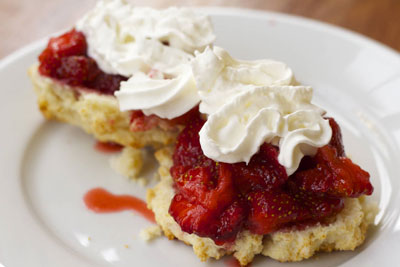

How to Make Strawbery Shortcake
Ingredients
- 3 baskes of fresh strawberries
- 1/2 cup sugar
- Whiping cream
- Vanilla
Remove the stems from the strawberries. Slice into thin (1/4" to 1/8") slices. Put into a large bowl. Add 1/4 cup to 1/2 cup of sugar (depending on how sweet the strawberries are to begin with) and mix into the strawberries. Set aside at room temperature to macerate (which means that the sugar will soften the strawberries and help release their juices). After the strawberries have been sitting for 20 minutes or so, take a potato masher and mash them a little. Not too much, just enough to get more juice out of them. Whip the cream, adding a drop or two of vanilla and a teaspoon of sugar. To serve, break up one biscuit per person into big pieces into a bowl. Ladle strawberries over the biscuit. Add a dolop of whipped cream.
- Recipe provided by Simply Recipes.